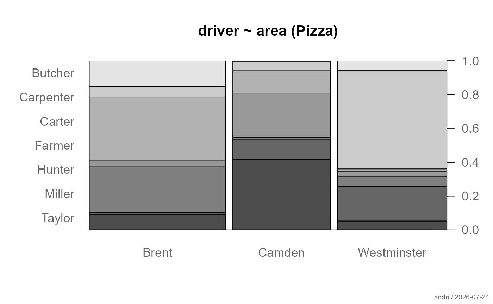

Computes and displays a comprehensive set of descriptive statistics and
association measures for a contingency table (r x c or 2 x 2). The function
is also dispatched for matrix and cross-classified factor pairs via
Desc.qq and Desc.matrix.
# S3 method for class 'Desc.qq'
print(x, digits = NULL, ...)
# S3 method for class 'Desc.qq'
plot(x, main = x$meta$main, which = 1, ...)
# S3 method for class 'table'
desc(
x,
conf.level = 0.95,
prop = NULL,
main = NULL,
verbose = NULL,
plotit = NULL,
...
)
# S3 method for class 'matrix'
desc(
x,
conf.level = 0.95,
prop = NULL,
main = NULL,
verbose = NULL,
plotit = NULL,
...
)
# S3 method for class 'array'
desc(
x,
conf.level = 0.95,
prop = NULL,
main = NULL,
verbose = NULL,
plotit = NULL,
...
)
# S3 method for class 'Desc.table'
print(x, print_header = TRUE, ...)a table or matrix object. For the formula interface,
use desc(y ~ x, data) which dispatches to this function
automatically.
number of digits for numerical output
further arguments passed to or from other methods
main title for the plot
plots to produce
numeric, confidence level for all confidence intervals.
Default is 0.95.
character string controlling which proportions are shown in the
cross-tabulation. One of "rows" (default), "cols",
"total", or "no" (frequencies only). At verbose = 3
all three proportions are shown regardless of this argument.
integer controlling the amount of output (1, 2, or 3).
NULL (default) falls back to
getOption("DescTools.verbose", 2). If set explicitly in the
function call, that value takes priority over the global option.
See Details for what each level produces.
whether a plot is produced automatically
whether the header is printed
an object of class c("Desc.table", "Desc").
The object is a list containing all computed statistics and is intended
to be used via its print and plot methods.
The verbose argument controls which statistics are computed and
displayed. The following table gives an overview; items marked with
2x2 are only shown for 2 x 2 tables.
verbose = 1 — essential output:
Summary: n, rows, columns, missings
Cross-tabulation: frequencies
Pearson chi-squared test
Chi-squared with Yates continuity correction (2x2)
Fisher's exact test (2x2)
McNemar's test (2x2)
Cramér's V with confidence interval and effect size label
Odds ratio with confidence interval (2x2)
verbose = 2 — standard output (default):
All of the above, plus:
Cross-tabulation: row proportions (or as set by prop)
G-test (log likelihood ratio test of independence)
Mantel-Haenszel chi-squared test
Contingency coefficient
Kendall's tau-b with confidence interval
Relative risk col1/col2 and row1/row2 with confidence intervals (2x2)
Proportions difference with confidence interval (2x2)
verbose = 3 — full output:
All of the above, plus:
Cross-tabulation: row, column, and total proportions
Lambda C|R, R|C, symmetric
Uncertainty coefficient C|R, R|C, symmetric
Mutual information
Goodman-Kruskal gamma with confidence interval
Stuart's tau-c with confidence interval
Somers' D C|R and R|C with confidence intervals
Pearson and Spearman correlation with confidence intervals
Table types:
For r x c tables (arbitrary number of rows and columns) all nominal and ordinal association measures listed above are available. For 2 x 2 tables the output additionally includes tests and measures specific to the 2 x 2 case (Fisher's exact, McNemar, odds ratio, relative risk, proportions difference).
Dispatching:
desc.matrix and desc.qq both redirect to desc.table.
When called via the formula interface desc(y ~ x, data), the type
of y and x is known and ordinal-specific measures
(tau-b and above) are activated automatically when both variables are
ordered factors.
desc for the generic function and formula interface, desc.numeric for univariate numeric descriptions, desc.factor for univariate factor descriptions, pharos::plot.Desc.table for different plotting options, stats::chisq.test, stats::fisher.test, cramerV, oddsRatio
Other desc:
desc(),
desc.Date(),
desc.factor(),
desc.nn,
desc.nq,
desc.numeric(),
desc.qn,
desc.qq,
desc.ts()
# from an existing table
tab <- table(Pizza$driver, Pizza$area)
desc(tab)
#> ──────────────────────────────────────────────────────────────────────────────
#> tab (table)
#>
#> Summary:
#> n: 1194, rows: 7, columns: 3
#>
#> Brent Camden Westminster Sum
#>
#> Butcher freq 72 1 22 95
#> p.row 75.8% 1.1% 23.2% .
#>
#> Carpenter freq 29 19 221 269
#> p.row 10.8% 7.1% 82.2% .
#>
#> Carter freq 177 47 5 229
#> p.row 77.3% 20.5% 2.2% .
#>
#> Farmer freq 19 87 11 117
#> p.row 16.2% 74.4% 9.4% .
#>
#> Hunter freq 128 4 24 156
#> p.row 82.1% 2.6% 15.4% .
#>
#> Miller freq 6 41 77 124
#> p.row 4.8% 33.1% 62.1% .
#>
#> Taylor freq 42 142 20 204
#> p.row 20.6% 69.6% 9.8% .
#>
#> Sum freq 473 341 380 1194
#> p.row 39.6% 28.6% 31.8% .
#>
#>
#> Pearson's Chi-squared test:
#> X-squared = 1009.5, df = 12, p-value < 2.2e-16
#> Log likelihood ratio (G-test) test of independence:
#> G = 1020.9, df = 12, p-value < 2.2e-16
#> Mantel-Haenszel Chi-squared:
#> X-squared = 2.6144, df = 1, p-value = 0.1059
#>
#> Contingency Coeff. 0.677
#> Cramer's V 0.650
#> Kendall Tau-b -0.057
#>
#>
desc(tab, prop = "rows", verbose = 3)
#> ──────────────────────────────────────────────────────────────────────────────
#> tab (table)
#>
#> Summary:
#> n: 1194, rows: 7, columns: 3
#>
#> Brent Camden Westminster Sum
#>
#> Butcher freq 72 1 22 95
#> p.row 75.8% 1.1% 23.2% .
#>
#> Carpenter freq 29 19 221 269
#> p.row 10.8% 7.1% 82.2% .
#>
#> Carter freq 177 47 5 229
#> p.row 77.3% 20.5% 2.2% .
#>
#> Farmer freq 19 87 11 117
#> p.row 16.2% 74.4% 9.4% .
#>
#> Hunter freq 128 4 24 156
#> p.row 82.1% 2.6% 15.4% .
#>
#> Miller freq 6 41 77 124
#> p.row 4.8% 33.1% 62.1% .
#>
#> Taylor freq 42 142 20 204
#> p.row 20.6% 69.6% 9.8% .
#>
#> Sum freq 473 341 380 1194
#> p.row 39.6% 28.6% 31.8% .
#>
#>
#> Pearson's Chi-squared test:
#> X-squared = 1009.5, df = 12, p-value < 2.2e-16
#> Log likelihood ratio (G-test) test of independence:
#> G = 1020.9, df = 12, p-value < 2.2e-16
#> Mantel-Haenszel Chi-squared:
#> X-squared = 2.6144, df = 1, p-value = 0.1059
#>
#> est lci uci¹
#> Contingency Coeff. 0.677 0.659 0.696
#> Cramer V 0.650 0.606 0.687
#> Kendall Tau-b -0.057 -0.107 -0.008
#> Goodman Kruskal Gamma -0.071 -0.132 -0.010
#> Stuart Tau-c -0.064 -0.120 -0.008
#> Somers D R|C -0.065 -0.121 -0.009
#> Pearson Correlation -0.047 -0.103 0.010
#> Spearman Correlation -0.075 -0.131 -0.019
#> Lambda R|C 0.293 0.259 0.327
#> Lambda sym 0.426 0.393 0.460
#> Uncertainty Coeff. R|C 0.227 0.204 0.250
#> Uncertainty Coeff. sym 0.288 0.259 0.316
#> Mutual Information 0.617 - -
#>
#> ────────────────────
#> ¹ 95% conf. level
#>
# 2x2 table — additional measures are shown automatically
tab2 <- tab[1:2, 1:2]
desc(tab2)
#> ──────────────────────────────────────────────────────────────────────────────
#> tab2 (table)
#>
#> Summary:
#> n: 121, rows: 2, columns: 2
#>
#> Brent Camden Sum
#>
#> Butcher freq 72 1 73
#> p.row 98.6% 1.4% .
#>
#> Carpenter freq 29 19 48
#> p.row 60.4% 39.6% .
#>
#> Sum freq 101 20 121
#> p.row 83.5% 16.5% .
#>
#>
#> Pearson's Chi-squared test (cont. adj):
#> X-squared = 27.943, df = 1, p-value = 1.249e-07
#> Fisher's exact test p-value = 2.435e-08
#> McNemar's chi-squared = 24.3, df = 1, p-value = 8.244e-07
#>
#> est lci uci¹
#>
#> odds ratio 47.172 6.033 368.844
#> rel. risk (col1) 1.632 1.296 2.056
#> rel. risk (col2) 0.035 0.005 0.250
#> prop. diff 0.382 0.251 0.526
#>
#>
# formula interface — dispatches to desc.table internally
desc(driver ~ area, data = Pizza)
#> ──────────────────────────────────────────────────────────────────────────────
#> driver ~ area (Pizza) (Desc.qq)
#>
#> Summary:
#> pairs: 1209, valid: 1194 (98.8%), missings: 15 (1.2%)
#>
#> Brent Camden Westminster Sum
#>
#> Butcher freq 72 1 22 95
#> p.row 75.8% 1.1% 23.2% .
#>
#> Carpenter freq 29 19 221 269
#> p.row 10.8% 7.1% 82.2% .
#>
#> Carter freq 177 47 5 229
#> p.row 77.3% 20.5% 2.2% .
#>
#> Farmer freq 19 87 11 117
#> p.row 16.2% 74.4% 9.4% .
#>
#> Hunter freq 128 4 24 156
#> p.row 82.1% 2.6% 15.4% .
#>
#> Miller freq 6 41 77 124
#> p.row 4.8% 33.1% 62.1% .
#>
#> Taylor freq 42 142 20 204
#> p.row 20.6% 69.6% 9.8% .
#>
#> Sum freq 473 341 380 1194
#> p.row 39.6% 28.6% 31.8% .
#>
#>
#> Pearson's Chi-squared test:
#> X-squared = 1009.5, df = 12, p-value < 2.2e-16
#> Log likelihood ratio (G-test) test of independence:
#> G = 1020.9, df = 12, p-value < 2.2e-16
#> Mantel-Haenszel Chi-squared:
#> X-squared = 2.6144, df = 1, p-value = 0.1059
#>
#> Contingency Coeff. 0.677
#> Cramer's V 0.650
#> Kendall Tau-b -0.057
#>
#>

# from a matrix
m <- matrix(c(153, 153, 167, 123, 108, 109, 89, 122, 167),
nrow = 3, byrow = TRUE,
dimnames = list(c("Brent","Camden","Westminster"),
c("Allanah","Maria","Rhonda")))
desc(m, verbose = 2)
#> ──────────────────────────────────────────────────────────────────────────────
#> m (matrix, array)
#>
#> Summary:
#> n: 1191, rows: 3, columns: 3
#>
#> Allanah Maria Rhonda Sum
#>
#> Brent freq 153 153 167 473
#> p.row 32.3% 32.3% 35.3% .
#>
#> Camden freq 123 108 109 340
#> p.row 36.2% 31.8% 32.1% .
#>
#> Westminster freq 89 122 167 378
#> p.row 23.5% 32.3% 44.2% .
#>
#> Sum freq 365 383 443 1191
#> p.row 30.6% 32.2% 37.2% .
#>
#>
#> Pearson's Chi-squared test:
#> X-squared = 17.905, df = 4, p-value = 0.001288
#> Log likelihood ratio (G-test) test of independence:
#> G = 18.099, df = 4, p-value = 0.001181
#> Mantel-Haenszel Chi-squared:
#> X-squared = 8.6654, df = 1, p-value = 0.003243
#>
#> Contingency Coeff. 0.122
#> Cramer's V 0.087
#> Kendall Tau-b 0.073
#>
#>